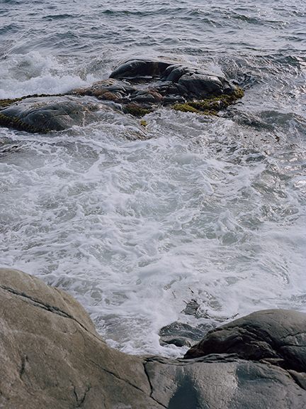

FISHERMAN'S DAUGHTER
A rough looking fishing boat approaches the harbor. At the stern is THE FISHERMAN’S DAUGHTER.
NARRATOR
The fisherman’s daughter comes home with the tide, which sweeps her and her haul into the port. Her sleepy town has already left her, gone to ring the dinner bell.
THE FISHERMAN’S DAUGHTER’S hands are white with salt and hair stiff with seafoam. HER PARTNER waits at the shores, ties her green stern to the dock. Seals circle her boat, begging for scraps.
FISHERMAN’S DAUGHTER
Time to come home.
CUT TO:
A white house overlooking the water. Inside THE COUPLE has finished their dinner, and sit looking down at the boats that sail back to shore.
NARRATOR
The couple sits in their house on the hill. In their glass house, they are only touched by the sun, while the sea burns out the window. Their hands know only the soft touch of sand, and their skin knows only years.
The fisherman’s daughter’s boat chugs by outside. The burning sun sets over the horizon, falling onto their singled roof. It hits the china on the table, and remnants of their meal.
The seagull lands on the fisherman’s daughter’s rover, which has seen many drives home on this route. They pass the dunes, on top of the tallest one is the glass house. The dunes turn into scraggly pines, which turn into roads with sand spilling over the double lines.
NARRATOR
She passes her father’s house, long gone from the storms that shifted the shoreline three years ago. Her hand intertwined with her partner, she is almost home.
As the night haze settles over the town, the lighthouse shines into shipwrecked waters. Purples and pinks hit the dunes.
NARRATOR
Weighed down by years of footsteps wandering past warning signs, they cave into the sea. With each wave, the sand bar, which once held the largest of storms back from striking the town, is beaten back into the depths of the water. The fish have come less and less, and the restrictions on catching them have sent the fisherman’s daughter farther out with each week. Only the couple with the house on the hill come to the market on the weekends to buy her cod.
The sky now dark, THE FISHERMAN’S DAUGHTER and HER PARTNER pull into their driveway then go inside.
Her hands defeated for the day, she wraps them before bed. She sees her father in the roughness of her fingers, and the sunspots that are forming in her crow’s feet. They lie on the mattress in her screen porch and talk about moving inland, away from the sea that she cannot bear to leave.
NARRATOR
They are stuck in the riptide, the ebb and flow of the only life she has ever known, but one her children will not. They fall asleep to the sea screaming for her to return. It howls like a dog in the night, and she cannot escape from the circling sharks that wait for the beach shacks and houses on the hills to sleep.
CUT TO:
Visuals of sea, which rages outside of their hut by the dunes, the lighthouse turns continually in the distance.
END OF ACT 1

FADE IN:
Floating in her house, submerged to the ceiling in water. The FISHERMAN’S DAUGHTER floats, asleep.
NARRATOR:
When she wakes, there is no air. The only sounds are the muffled rings of surf hitting the beach, and of hungry seagulls. Her hand floats to her stomach, which swells with the new life she longs to give.
As she drives to town the next day, she passes the glass house on the hill. The couple is not awake yet, only she and the other fishermen stand against the gaining breeze and orange morning sun. She will not be fishing today.
The FISHERMAN’S DAUGHTER She starts her motor and heads for the outer rocks, She stops at the third island out, where heather and a few pine trees grow and give shade to a white boat that reads JUNIA.
You’ve grown well.
We see THE FISHERMAN'S DAUGHTER as a child, running on a pier towards the water, pointing at the seals and waving to her FATHER, on a fishing boat below.

She tends to the olive tree that has grown beside the small dinghy that she parked on her favorite island years ago. She sees she child she once was, begging to skim her hand along the water’s surface as her mother rowed out past the houses and towards the island.
We see THE FISHERMAN’S DAUGHTER as a child, wearing big red rain boots, laughing at the bubbles that trail off her MOTHER’S oars. They are on the island now, eating a picnic. MOTHER tosses an olive pit into the earth. Fades back to real time.
How many years will it take you to fruit?
NARRATOR:
The olive tree shakes in the breeze. It is worn and fragile from years fighting the ocean air.
THE FISHERMAN’S DAUGHTER:
Where will I go without your guidance? I cannot stay.
NARRATOR:
She listens to the crying of the leaves in the wind, and lays down beside her tree. Her fingers push into the soft dirt and down to the bedrock below. She feels the motion of the waves, one that has moved her her whole life. She feels the push of the current and the pull of her roots on the land. Her stomach swells, opening up to let in the salt.
The waving grass has no defense, and the glass house that sits above it shatters under her pressure. Seaweed floats through the shards. She is so tired.
THE FISHERMAN’S DAUGHTER opens her eyes- she is back on the island looking up at the night sky.
THE FISHERMAN’S DAUGHTER
I must stay. I must look after this place.
The fisherman’s daughter looks at her salt-caked hands, and the cracks in her palms. After thirty years of being on the sea, they know these waters well. She cannot go, she is stuck between the waters and the sea. She has a duty to the water, to every fish she takes. Time to come home.
FADE OUT
END OF ACT 2